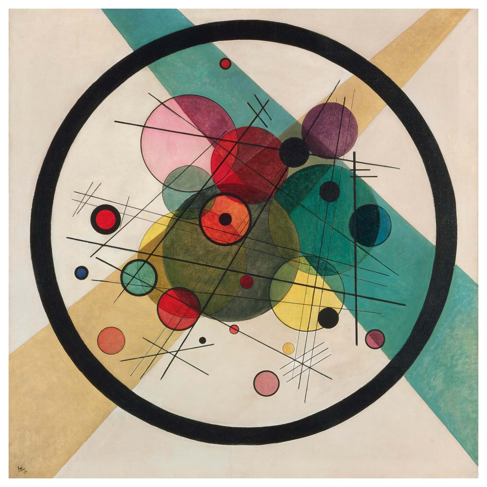

<section class="notes">
            <h1>Example</h1>

            <p><i>01 Jan 2026</i></p>

            <p>Blah-blah</p>

            <a href="https://google.com">Link example</a>

            <figure>
                <a href="image1.jpg">
                    
                </a>
                <figcaption>
                    Kandinsky, Circles in a circle (1923)
                </figcaption>
            </figure>

        </section>

        <footer>
            <p>Maksim Kleimenov, <script>document.write(new Date().getFullYear());</script></p>
        </footer>
